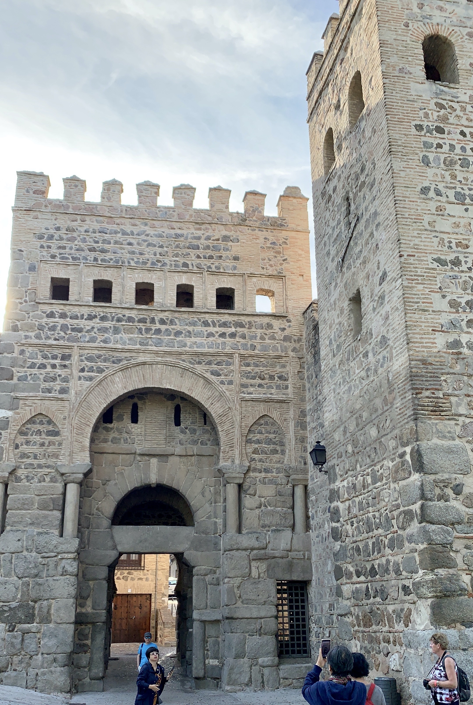
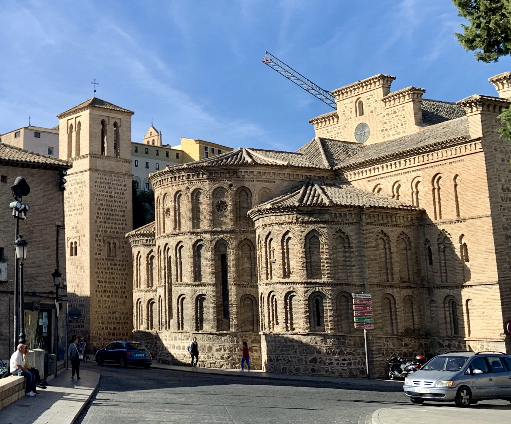
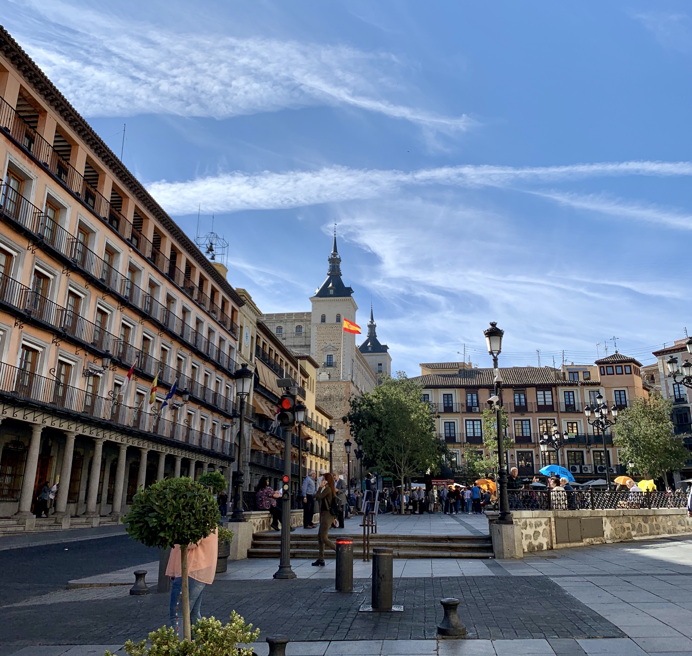
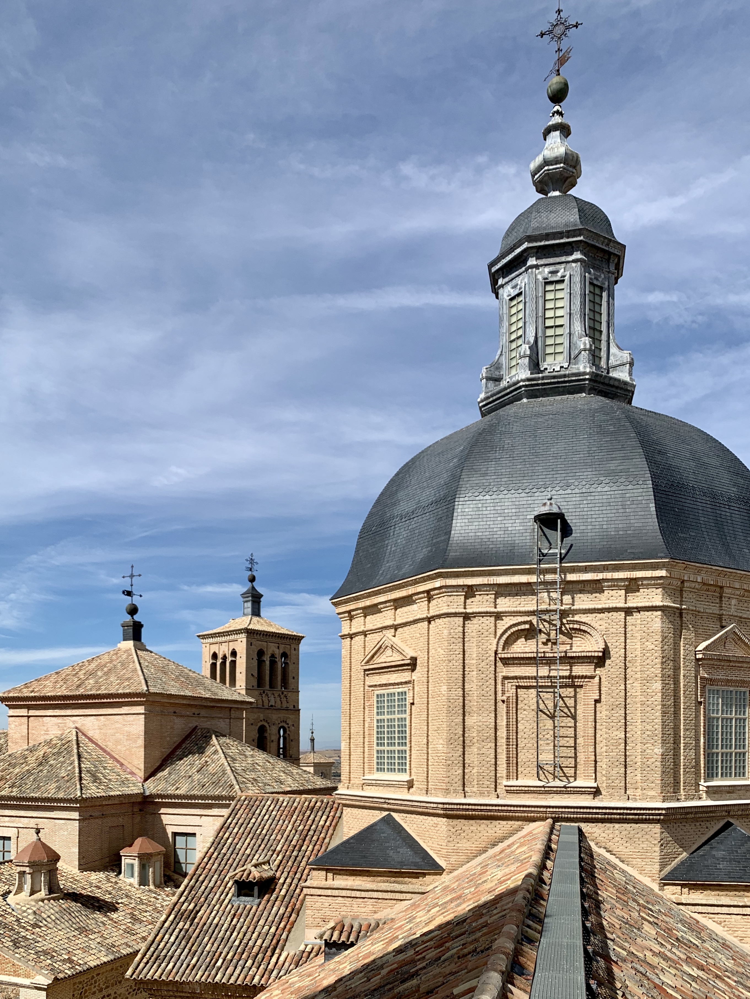
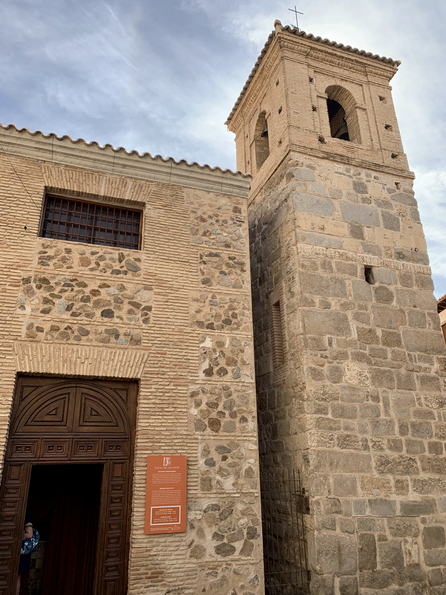
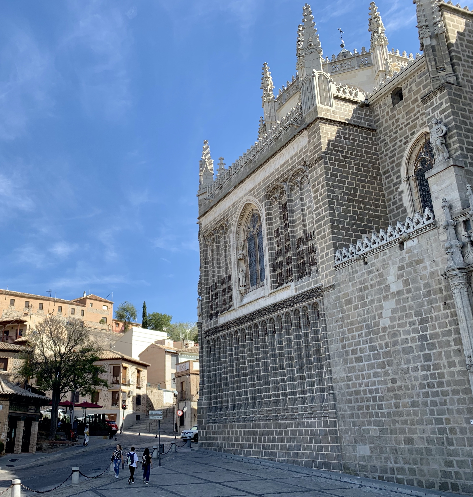
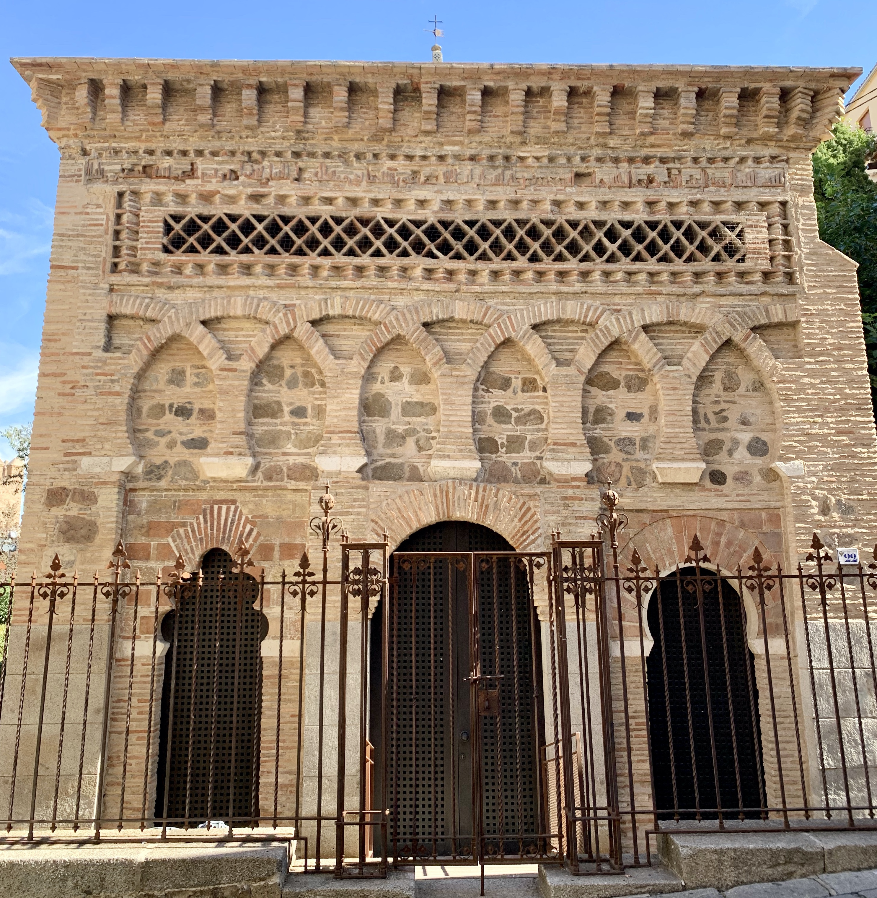
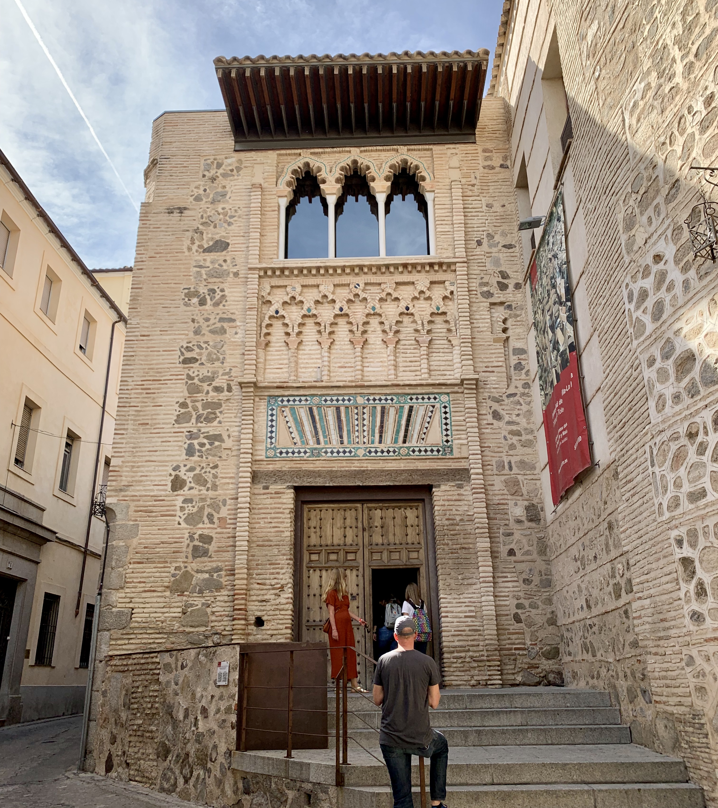
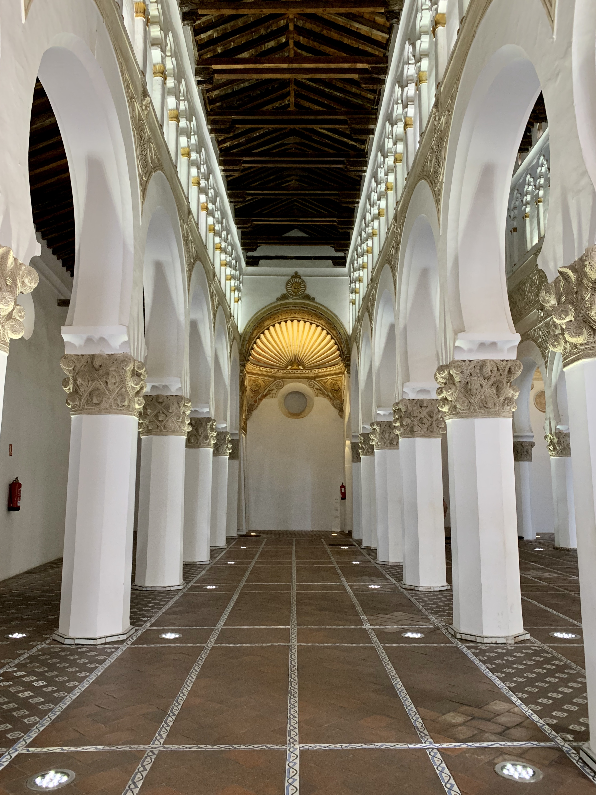

Puerta de Alfonso VI

Parroquia de Santiago el Mayor
Good To Know
- Year round travel destination
- Best way to get around is on foot - wear good shoes!

Plaza de Zocodover

Iglesia de los Jesuitas

Iglesia del Salvador

Monasterio de San Juan de los Reyes

Alcázar de Toledo
Quick Facts
- Perfect day trip from Madrid - 1 hour by bus
- Known for its unique architecture and sweet marzipan
- City of the Three Cultures: rich history of Muslim and Roman rules

Puerta de Bisagra

Puerta del Sol

Mezquita del Cristo de la Luz
Did you know?
- Toledo served as the capital of Spain during the Visigothic rule and after Reconquista up until 1560 AD.
- It is also known for its strong, antique-inspired swords made of local Toledo steel.

Universidad de Castilla-La Mancha

Sinagoga de Santa María La Blanca